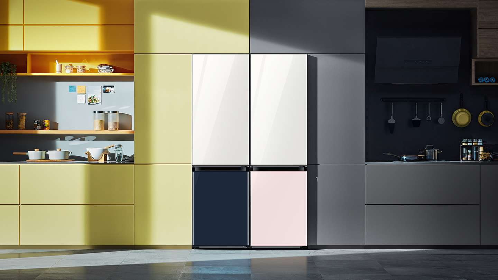
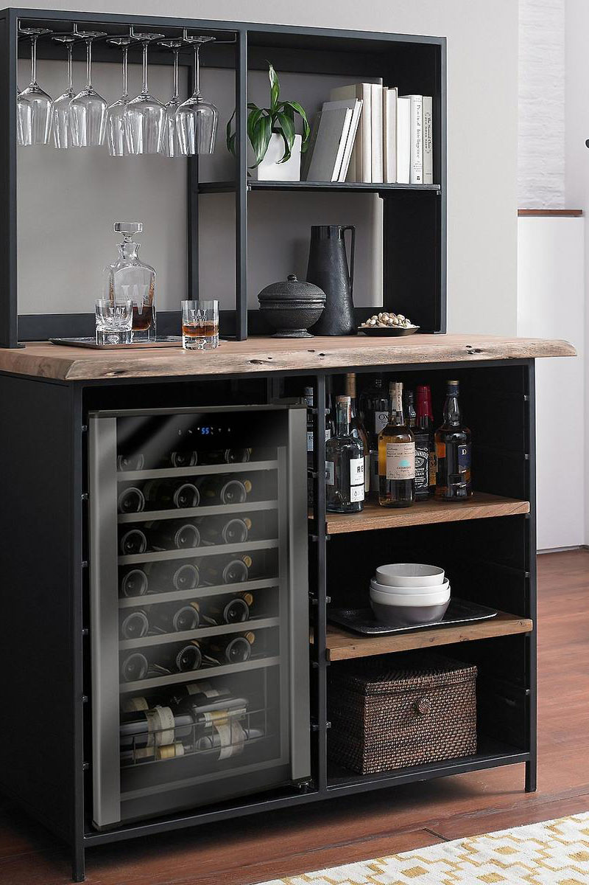
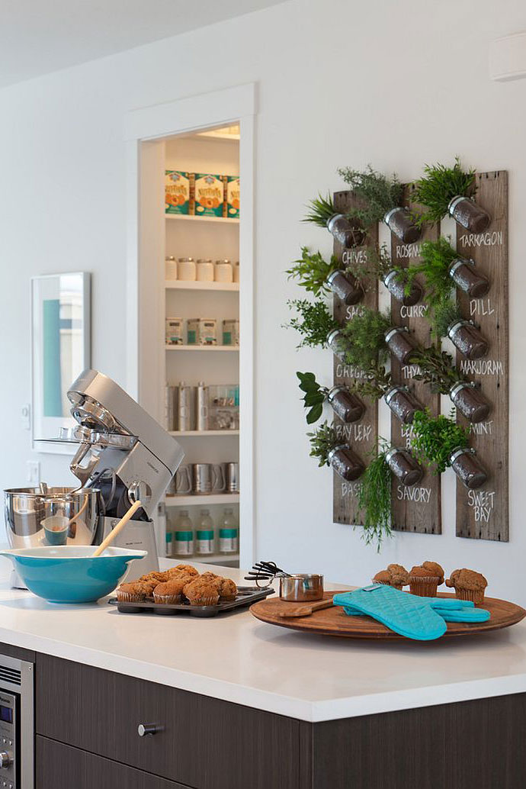
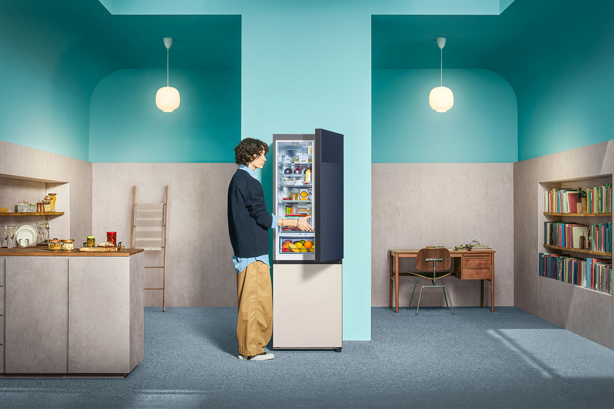

Xu hướng bếp hiện đại: Ngoài tiện nghi thì còn gì nữa?
Căn bếp đủ công năng chưa đủ, mà còn là nơi cho thấy sự chau chuốt
của gia chủ trẻ và thể hiện sự ấm cúng có “chất” của tổ ấm hiện đại.
Nguồn: Samsung
Với nhiều người trẻ, không gian sống ngày nay không còn gói gọn
trong khái niệm một chốn an cư mà còn là chỗ dựa tinh thần sau một
ngày dài. Theo đó, ngoài việc đáp ứng các nhu cầu sống cơ bản (ngủ,
nấu ăn, vệ sinh cá nhân…), các phòng chức năng trong nhà còn phải
thể hiện được cá tính và lối sống khác nhau của gia chủ, nhằm tạo
cảm giác thân thuộc và thoải mái nhất.
Để làm được điều này, ngoài sự đầu tư về mặt kiến trúc, một số nâng
cấp hoặc thay đổi cách bố trí, trang bị, vật dụng sẽ là giải pháp
linh hoạt hơn dành cho các gia chủ trẻ. Ví dụ điển hình là “lên đời”
cho khu vực bếp.
Vietcetera nhận thấy có 3 xu hướng cải thiện không gian dễ thực hiện
mà bạn có thể áp dụng cho việc tân trang nhà bếp của mình - nhất là
trong bối cảnh nhu cầu dọn dẹp nhà cửa tăng cao, khi mà mùa lễ hội
cuối năm và năm mới đang đến gần.
1. Chọn thiết bị nội thất có tính linh hoạt
Thiết bị nội thất linh hoạt là những sản phẩm có khả năng tương
thích linh hoạt với nhiều phong cách thiết kế không gian khác nhau.
Nhờ đó, chúng không chỉ giúp bạn tiết kiệm một khoản chi phí khi có
nhu cầu thay đổi phong cách nội thất thường xuyên (do chuyển nhà
hoặc theo tâm trạng), mà thậm chí, còn khuyến khích bạn sáng tạo ra
những cách bố trí mới ấn tượng.
May mắn là tính linh hoạt đang là tiêu chí phát triển sản phẩm phổ
biến hiện nay của nhiều thương hiệu lớn, nhờ đó các sản phẩm nhóm
này đang xuất hiện ngày càng đa dạng trên thị trường giúp việc tìm
mua cũng dễ dàng hơn.

Tủ lạnh BESPOKE là chiếc tủ lạnh có tính linh hoạt cao với nhiều
không gian sống khác nhau | Nguồn: Samsung
Một minh hoạ cho việc ứng dụng thiết bị có tính linh hoạt vào gian
bếp là việc sử dụng tủ lạnh BESPOKE - một sản phẩm mới ra mắt năm
nay từ Samsung.
Như tên gọi, BESPOKE (tạm dịch: đo ni, thiết kế riêng) cho phép
người dùng dễ dàng ghép nối giữa các mô-đun một cách linh hoạt, nhờ
đó đáp ứng đa dạng yêu cầu về công năng, kiểu dáng và nhu cầu sử
dụng. Chiếc tủ lạnh này cũng có khả năng ẩn mình hoàn hảo trong mọi
căn bếp nhờ thiết kế âm tường cùng bản lề đặc biệt tạo ra tổng thể
liền mạch cho gian bếp.
Nói cách khác, dù là khi bạn độc thân, có một đại gia đình, thích
tối giản hay tiết kiệm không gian, tủ lạnh BESPOKE sẽ “phát triển” -
to hơn theo yêu cầu của gia chủ.
2. Sẵn sàng cho những buổi tiệc tại gia
Khi hàng quán còn vướng nhiều hạn chế theo quy định giãn cách, những
bữa tiệc tại gia đã nổi lên như một “thế lực” tiệc tùng mới. Những
bữa tiệc kiểu này thường được triển khai khá đơn giản. Song với
nhiều gia chủ trẻ, trải nghiệm tiệc tại gia vẫn có nhu cầu được nâng
tầm.

Trang bị thêm nội thất dành cho tiệc tại gia có thể giúp căn bếp
của bạn trông chuyên nghiệp hơn | Nguồn: Wineenthusiast.com
Cụ thể, không chỉ là việc đầu tư về chủ đề và món ăn, trải nghiệm
tiệc tại gia sẽ trọn vẹn hơn nếu đó còn là khoản đầu tư về dụng cụ
dùng bữa hợp bối cảnh, các trang bị, thiết bị chuyên dụng của từng
loại tiệc. Đồng thời, thông qua việc “lên đời” các trang bị và vật
dụng phục vụ tiệc tùng, không gian bếp của bạn cũng dễ trở nên độc
đáo và chuyên nghiệp hơn - nhất là trong mắt những vị khách ghé
thăm.
Ví dụ như một chiếc tủ giữ rượu vang mini cho những buổi tiệc phong
cách ‘food-pairing’ hoặc khu vực quầy pha chế cocktail tích hợp cho
những buổi tiệc rượu sẽ làm không khí tiệc tại gia “đẳng cấp” hơn.
Thậm chí, một số sản phẩm như tủ lạnh BESPOKE cũng có thể tham gia
“cuộc vui” này nhờ việc các mô-đun lắp ghép được nhiều tủ, đáp ứng
tốt nhu cầu dự trữ các thực phẩm, nước uống sử dụng cho những ngày
tổ chức tiệc.
3. Trang trí theo phong cách dung hợp
Một cách đơn giản khác bạn có thể áp dụng để “lên đời” cho bếp chính
là dung hợp nội thất của các khu vực nhà khác nhau vào gian bếp để
tạo ra các phiên bản bếp “lai” như: bếp lai phòng sách, bếp lai sân
vườn...

Một gợi ý kết hợp bếp và vườn rau thơm mini | Nguồn: Decoist.com
Một số gợi ý dễ thấy cho phong cách này là việc đặt thêm một kệ sách
nấu ăn, hoặc tận dụng những góc trống của bếp cải tạo thành khu vực
trồng rau thơm, quả trái gia vị. Nhờ đó, gian bếp của bạn không chỉ
mang màu sắc độc đáo mà còn tối ưu được không gian sẵn có - nhất là
với những căn bếp có diện tích lớn.
Tuy nhiên, phong cách trang trí này cũng có một số tiêu chí nhất
định để áp dụng thành công, đó là việc chọn lựa các thiết bị phải
hoà hợp màu sắc, không gian tổng thể của bếp. Đơn giản nhất, bạn có
thể chọn các sản phẩm có tùy chọn màu sắc và kích thước như tủ lạnh
BESPOKE.

Một gợi ý kết hợp bếp và phòng đọc sách cho căn hộ diện tích nhỏ
sử dụng tủ lạnh BESPOKE | Nguồn: Samsung
Tủ lạnh BESPOKE sở hữu bảng màu đa dạng từ màu trắng sang trọng, màu
hồng thời thượng đến màu xanh navy lịch lãm, người tiêu dùng có thể
kết hợp chúng để phản ánh sở thích cá nhân. Bên cạnh đó, sản phẩm
còn được làm từ chất liệu Glam Glass giúp làm nổi bật một cách tinh
xảo không gian mà nó chiếm giữ với vẻ sáng bóng mềm mại.
Với các tính năng mang tính thời trang, người dùng có thể tự do lựa
chọn màu sắc theo đúng sở thích cùng cá tính riêng; nhờ đó, gian bếp
dễ dàng được biến hoá trở nên tinh tế, sang trọng hơn, góp phần thể
hiện phong cách sống “có gu” của gia chủ.